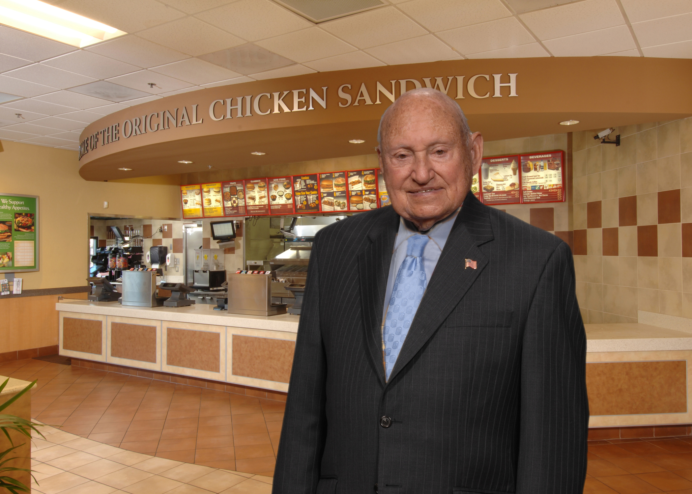

On this fateful day, Samuel Truett Cathy, was born in Eatonton, Georgia. After serving in the attending Boys High School, Cathy went on to serve in the US Army during the second World War. After the war, Cathy began a small sized restaurant which was aptly named Dwarf Grill. During his time at the Dwarf Grill, Samuel and his brother, Ben, founded the original chicken sandwch that became an iconic part of Chick Fil A. 
The information provided above was provided by: https://en.wikipedia.org/wiki/S._Truett_Cathy